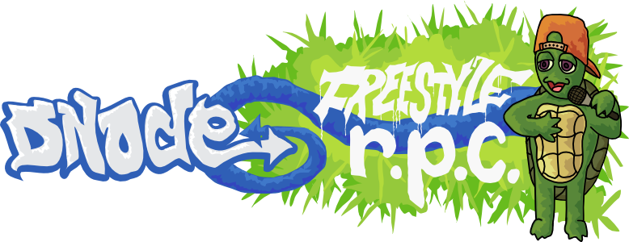

Achieving Greatness with Node.js
Practical hacking with JavaScript
Reid Burke — @reid
JavaScript
Prototype-based, object-oriented scripting language.
- Web sites
- Widgets
- Browser extensions
JavaScript Everywhere
- Yahoo! Connected TV widgets
- HP webOS native apps
- Universal remote controls
- Realtime stock trading apps
- Many more!
Most popular language on GitHub: https://github.com/languages
Server-Side JavaScript
Started in 1996: Netscape LiveWire.
Refined since then: AppJet, EtherPad, CommonJS.
Used in Yahoo!'s YQL.
Node.js
Event-driven I/O framework for server-side JavaScript.
Easily create scalable network apps, like web servers.
Created in 2009. Uses the V8 JavaScript engine from Google.
Hello, world!
var http = require('http');
http.createServer(
function (request, response) {
response.writeHead(200,
{'Content-Type': 'text/plain'});
response.end('Hello World\n');
}).listen(8000);
console.log('Started at
http://127.0.0.1:8000/');
Installing
- Easy build on Linux, Mac, Solaris.
- Windows binaries available.
- Node.js Package Manager
Node.js Package Manager
http://bit.ly/howtonode — Step 4

The package manager for Node.js modules.
npm install modulename
var foo = require('modulename');
Registry: http://search.npmjs.org/
Play
Type node to start a REPL.
$ node
> console.log('Hello, Bucharest!');
Hello, Bucharest!
Control-D to quit.
Start a script file with node script.js.
What can I build with this?
Socket.io
npm install socket.io
Easy realtime browser apps! http://socket.io/
<script src="//socket.io/socket.io.js">
</script><script>
var socket = new io.Socket({url});
socket.connect();
socket.on('connect', function(){ … })
socket.on('message', function(){ … })
socket.on('disconnect', function(){ … })
</script>
NowJS
npm install now — http://nowjs.com/
var nowjs = require("now");
var everyone = nowjs.initialize(httpServer);
everyone.now.getServerInfo = function(callback){
db.doQuery(callback);
}
<script>now.getServerInfo(function(data){
// data contains the query results
});</script>
DNode
npm install dnode
Freestyle RPC between Node.js, the browser, Perl, Ruby and Java.

Realtime apps
- Games: massively-multiplayer is easy!
- Chatroom
- Shared whiteboard
- Live stock quotes
- Streaming charts with http://smoothiecharts.org/
- Your hack
Web Site Frameworks
Node.js is not a web server, it's a framework to make one.
Many projects exist to help build a web site.
Connect
npm install connect
Low-level middleware stack for creating HTTP servers.
Express
npm install express
var app = express.createServer();
app.get('/', function(req, res){
res.send('Hello World');
});
app.listen(3000);
Router, view rendering, configuration, etc.
Debugger
npm install node-inspector
Works for any Node.js program. Handy!
node --debug-brk app.js
node-inspector
You can now debug your app in WebKit browser.
node --debug # Enable debug mode
node --debug-brk # Break on startup
Node.js API
http://nodejs.org/docs/latest/api/
- HTTP, UDP, DNS, TLS/SSL, Crypto, File System
- Child process spawning
- Events
.onvs..once.removeListener
- Buffers: fast way to handle large data
- Much more
Callbacks
var file = "/etc/redhat-release";
fs.stat(file, function(err, stat) {
if (stat.isFile()) {
fs.readFile(file, function(err, file) {
postRequest("http://example.com", file, function (err, response) {
if (response.status === 200) {
db.save(file, function (err) {
next();
});
}
});
});
}
});
Better Callbacks
var file = "/etc/redhat-release";
function onPost(err, response) {
if (response.status !== 200) throw err;
db.save(file, next);
}
function onRead(err, file) {
postRequest("http://example.com", file, onPost);
}
function onStat(err, stat) {
if (stat.isFile()) fs.readFile(file, onRead);
}
fs.stat(file, onStat);
jsdom
npm install jsdom
Implementation of the W3C DOM. Headless browser!
var jsdom = require("jsdom");
jsdom.env("http://nodejs.org/dist/", [
'http://yui.yahooapis.com/3.3.0/build/simpleyui/simpleyui-min.js'
], function(errors, window) {
console.log("there have been",
window.Y.all("a").size(),
"nodejs releases!");
});
Serialport
eeeee eeeee eeeee eeee e eeeee
8 8 8 88 8 8 8 8 8 "
8e 8 8 8 8e 8 8eee 8e 8eeee
88 8 8 8 88 8 88 e 88 88
88 8 8eee8 88ee8 88ee 88 8ee88 8ee88
eeeee eeee eeeee e eeeee e eeeee eeeee eeeee eeeee
8 " 8 8 8 8 8 8 8 8 8 8 88 8 8 8
8eeee 8eee 8eee8e 8e 8eee8 8e 8eee8 8 8 8eee8e 8e
88 88 88 8 88 88 8 88 88 8 8 88 8 88
8ee88 88ee 88 8 88 88 8 88eee 88 8eee8 88 8 88
npm install serialport
Talk to physical devices, like an Arduino.
- Interact with sensors
- Write to LED displays
- Physical controls: dials, switches, etc.
Arduno and Node.js
Using a physical dial to seek a YouTube video synced to many devices.
Control a R/C boat from a web browser.
Taking JSON from YQL and writing it to a LED matrix.
About this slideshow
- Slideshow source: https://github.com/reid/decks
- Slideshow system based on YUI 3: https://github.com/reid/upstage